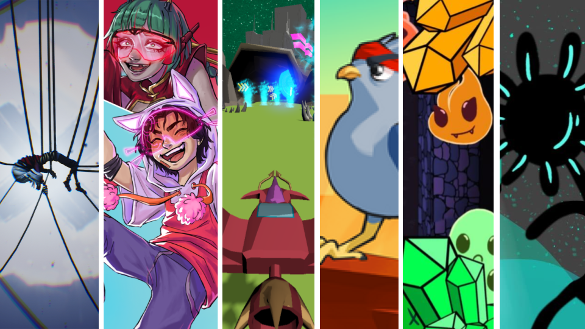

Profile
Bachelor's degree holder in Computer Science specializing in Real-Time Interactive Simulation, with emphasis in Game Design and Gameplay Programming. Passionate about creating engaging interactive experiences through design and programming.
Bachelor's degree holder in Computer Science specializing in Real-Time Interactive Simulation, with emphasis in Game Design and Gameplay Programming. Passionate about creating engaging interactive experiences through design and programming.

Duration: 2021 – 2025
Institution: DigiPen Institute of Technology. Bilbao, Spain
Through an in-depth study of mathematics and computer science — combined with real-world projects where you design and program your own fully playable games from start to finish — this program transforms you into an efficient software developer, able to understand, communicate, and solve problems at every stage of the development process. - Digipen
Duration: 2021 – 2025
Institution: DigiPen Institute of Technology. Bilbao, Spain
I earned a Mathematics Minor after completing coursework in algebra, geometry, vector geometry, linear algebra, discrete mathematics, differential equations, curves and surfaces, as well as probability and statistics.
During my studies I gained high expertise in C++, and I have used it for a wide variety of projects, including games developed with custom engines in C++. Before learning C++, I made sure I felt confident enough with my C skills, I have also developed many games in Unity and I used C# for it. Matlab is also a very well familiar language, and I have used it for many mathematical simulations. I learnt Python for data analysis and machine learning programs, featuring an application using neural networks for image recognition. I got some insight on x86 Assembly to get to know how far optimizations could go, and I have also learnt some HTML and CSS for the development of this webpage.
The IDE I have used the most is Visual Studio, and it has been the tool that I have used the most during my degree for debugging, and Git has been the main way of saving and sharing my work. For game development, Unity has been the choice for smaller projects, game jams, and it was my introduction to game develpment. Later on I moved to Unreal to develop bigger projects. Moreover I did a modelling and animation course on Maya, and I have an intermediate knowledge with OpenGL and graphics programming.
Here is my collection of the games I had the pleasure to work on during my degree! Some were developed with custom engines in C++, and others with well known engines as Unity and Unreal.
